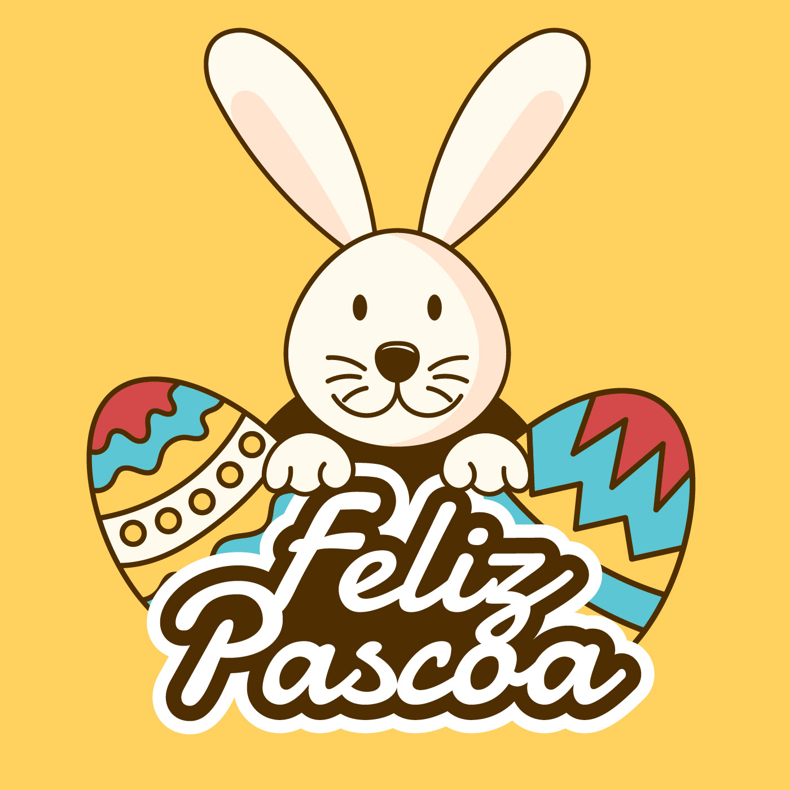

GALERIA

Páscoa ou Domingo da Ressurreição é uma festividade religiosa e um feriado que celebra a ressurreição de Jesus ocorrida ao terceiro dia após sua crucificação no Calvário, conforme o relato do Novo Testamento. É a principal celebração do ano litúrgico cristão e também a mais antiga e importante festa cristã.
A data da Páscoa determina todas as demais datas das festas móveis cristãs, exceto as relacionadas ao Advento. O domingo de Páscoa marca o ápice da Paixão de Cristo e é precedido pela Quaresma, um período de quarenta dias de jejum, orações e penitências.
Coelho da Páscoa: O coelho é um dos símbolos mais emblemáticos da Páscoa cristã, que significa a fertilidade e a esperança. Como esse animal está associado com as grandes ninhadas, ele simboliza a fertilidade e a renovação da vida.
Esse símbolo pascal foi trazido pelos alemães ao Brasil em meados do século XVII. Isso porque na mitologia alemã, o povo realizava cultos para Ostara, a deusa da fertilidade. Essas celebrações aconteciam com a chegada da primavera, que trazia consigo a esperança e a renovação.
Ovo de Páscoa: O ovo de Páscoa talvez seja um dos símbolos mais conhecidos e associados a essa celebração. Já na antiguidade, era comum presentear as pessoas com os ovos cozidos e coloridos que simbolizavam a vida e o nascimento. Isso acontecia com a chegada da primavera e esse costume mais tarde foi adotado pelos cristãos.
Já na modernidade, essa tradição passou a ser com os famosos ovos de chocolates. Assim, no domingo de Páscoa, as pessoas costumam presentear os amigos e os familiares.